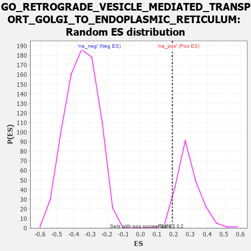

| | | Dataset | 7d |
| Phenotype | NoPhenotypeAvailable |
| Upregulated in class | na_pos |
| GeneSet | GO_RETROGRADE_VESICLE_MEDIATED_TRANSPORT_GOLGI_TO_ENDOPLASMIC_RETICULUM |
| Enrichment Score (ES) | 0.19135462 |
| Normalized Enrichment Score (NES) | 0.66729355 |
| Nominal p-value | 0.9488372 |
| FDR q-value | 0.9716278 |
| FWER p-Value | 1.0 |
Table: GSEA Results Summary
 Fig 1: Enrichment plot: GO_RETROGRADE_VESICLE_MEDIATED_TRANSPORT_GOLGI_TO_ENDOPLASMIC_RETICULUM
Fig 1: Enrichment plot: GO_RETROGRADE_VESICLE_MEDIATED_TRANSPORT_GOLGI_TO_ENDOPLASMIC_RETICULUM
Profile of the Running ES Score & Positions of GeneSet Members on the Rank Ordered List
| PROBE | GENE SYMBOL | GENE_TITLE | RANK IN GENE LIST | RANK METRIC SCORE | RUNNING ES | CORE ENRICHMENT | | 1 | KLC2 | | | 238 | 0.951 | 0.0395 | Yes |
| 2 | NSF | | | 243 | 0.947 | 0.1082 | Yes |
| 3 | KIF23 | | | 522 | 0.622 | 0.1185 | Yes |
| 4 | RINT1 | | | 1110 | 0.462 | 0.0783 | Yes |
| 5 | ATP9B | | | 1139 | 0.456 | 0.1080 | Yes |
| 6 | COPZ1 | | | 1613 | 0.372 | 0.0756 | Yes |
| 7 | COPB2 | | | 1687 | 0.359 | 0.0926 | Yes |
| 8 | COPA | | | 1806 | 0.336 | 0.1023 | Yes |
| 9 | UVRAG | | | 1831 | 0.332 | 0.1234 | Yes |
| 10 | ZW10 | | | 1973 | 0.309 | 0.1283 | Yes |
| 11 | USE1 | | | 2079 | 0.294 | 0.1365 | Yes |
| 12 | CENPE | | | 2086 | 0.293 | 0.1571 | Yes |
| 13 | RAB6B | | | 2133 | 0.286 | 0.1722 | Yes |
| 14 | NBAS | | | 2299 | 0.260 | 0.1704 | Yes |
| 15 | COG7 | | | 2371 | 0.250 | 0.1797 | Yes |
| 16 | TMED7 | | | 2478 | 0.230 | 0.1832 | Yes |
| 17 | COPE | | | 2542 | 0.221 | 0.1914 | Yes |
| 18 | SCFD1 | | | 2783 | 0.185 | 0.1746 | No |
| 19 | COPG2 | | | 2859 | 0.173 | 0.1778 | No |
| 20 | KIF4B | | | 2965 | 0.155 | 0.1759 | No |
| 21 | SCYL1 | | | 3172 | 0.126 | 0.1592 | No |
| 22 | BET1L | | | 3224 | 0.118 | 0.1614 | No |
| 23 | COG3 | | | 3412 | 0.088 | 0.1442 | No |
| 24 | COG4 | | | 3608 | 0.058 | 0.1239 | No |
| 25 | STX18 | | | 3962 | 0.000 | 0.0795 | No |
| 26 | KIF15 | | | 4106 | -0.024 | 0.0632 | No |
| 27 | GBF1 | | | 4215 | -0.044 | 0.0528 | No |
| 28 | ARF4 | | | 4383 | -0.073 | 0.0371 | No |
| 29 | KIF3B | | | 4450 | -0.085 | 0.0350 | No |
| 30 | KLC1 | | | 4697 | -0.139 | 0.0141 | No |
| 31 | RER1 | | | 5139 | -0.235 | -0.0243 | No |
| 32 | LMAN2 | | | 5155 | -0.238 | -0.0088 | No |
| 33 | PICK1 | | | 5265 | -0.263 | -0.0033 | No |
| 34 | KIF3A | | | 5480 | -0.313 | -0.0074 | No |
| 35 | KIF2A | | | 5511 | -0.322 | 0.0123 | No |
| 36 | SURF4 | | | 5951 | -0.455 | -0.0098 | No |
| 37 | TMED2 | | | 6665 | -0.746 | -0.0452 | No |
| 38 | RAB1A | | | 7096 | -0.993 | -0.0269 | No |
| 39 | PLPP3 | | | 7740 | -1.876 | 0.0291 | No |
Table: GSEA details [plain text format]

Fig 2: GO_RETROGRADE_VESICLE_MEDIATED_TRANSPORT_GOLGI_TO_ENDOPLASMIC_RETICULUM: Random ES distribution
Gene set null distribution of ES for GO_RETROGRADE_VESICLE_MEDIATED_TRANSPORT_GOLGI_TO_ENDOPLASMIC_RETICULUM